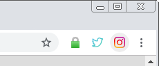
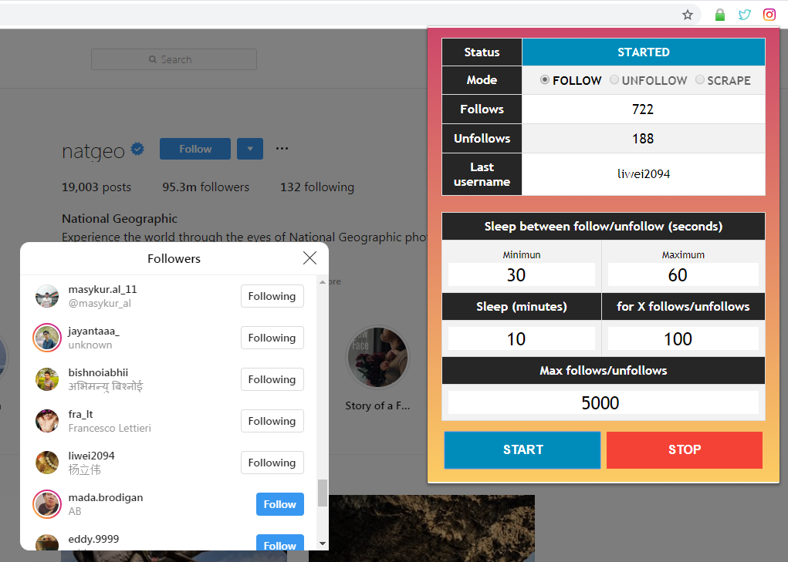
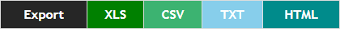

Auto follow, unfollow, scrape... Followers, Following and Likes.
Thank you for using this extension!
You will see, it is really easy to use it.
All manipulations, follow, unfollow and scrape, are very similar.
1) Open Google Chrome
2) Open your Chrome Extensions: type the url chrome://extensions or click on ⋮ → More tools → Extensions
3) Choose the extension folder that you just downloaded (and unpacked) then click on OK
4) That's all! You're now ready to increase your followers or scrape accounts!
NOTE: If you have an Instagram tab already open on Google Chrome before the installation, refresh it. It is better to restart Chrome after any extension installation.
Video: Installation of the Chrome Extension
You will find below detailed explanations and tutorial videos. If you are lazy to read, just watch the videos :)
1) Open Google Chrome and go the the account or the post that you want to follow/unfollow/scrape its Followers, Following or Likes
2) You can choose to follow/unfollow/scrape the Followers or Following of a specific account, or the Likes of a specific post:
3) Open the extension (click on the icon at the top right corner)
4) Choose the mode (FOLLOW, UNFOLLOW or SCRAPE), change the configuration if you want to, then click on START
5) [FOR SCRAPE MODE ONLY] You can export the accounts in different formats: XLS, CSV, TXT and HTML. Simply click on the format you want in the Export bar: 
NOTE: You can also scrape the usernames of a post comments, but you have to click on "Load more comments" to load the comments first. This feature is in BETA.
1) On the current Instagram page where the extension is working, do a right-click then click on "Inspect" or simply press Ctrl+Shift+I
2) You can now see the logs in the console at the bottom right of your screen
Note that the Instagram logs will also be displayed in this console.How to Follow the Followers of a specific account
How to Unfollow the Followers of a specific account
How to Scrape and Export the Followers of a specific account